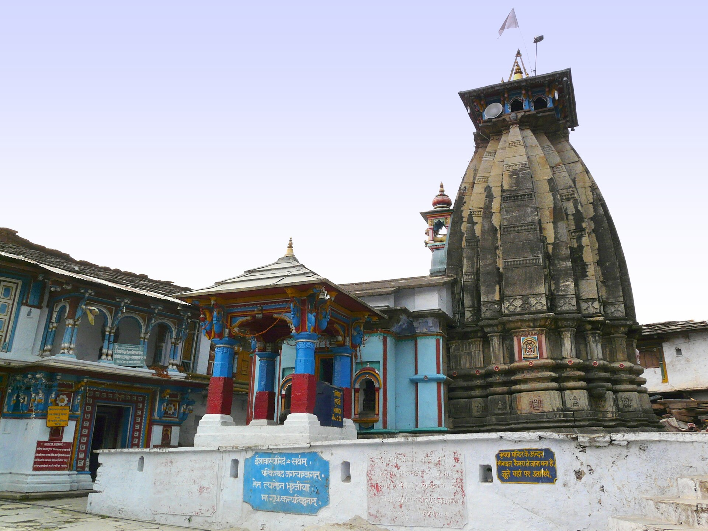
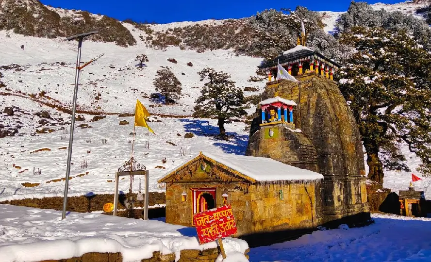
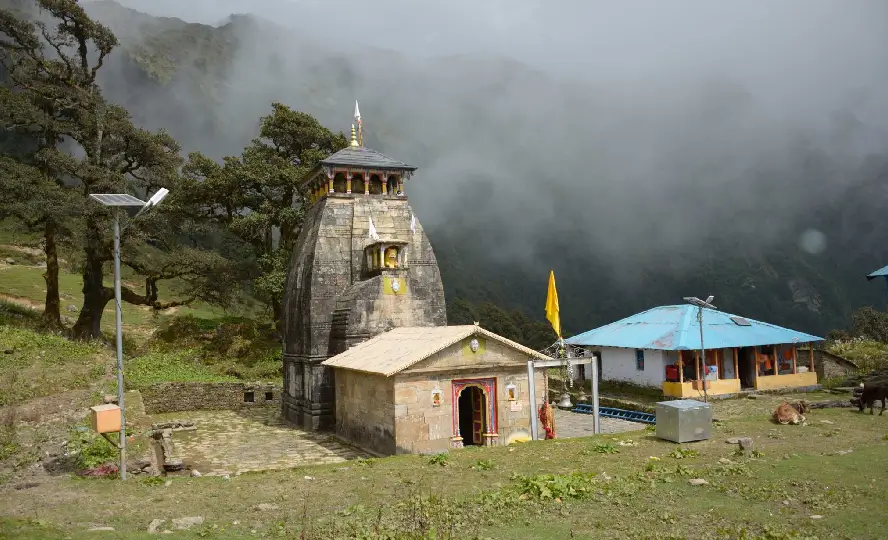
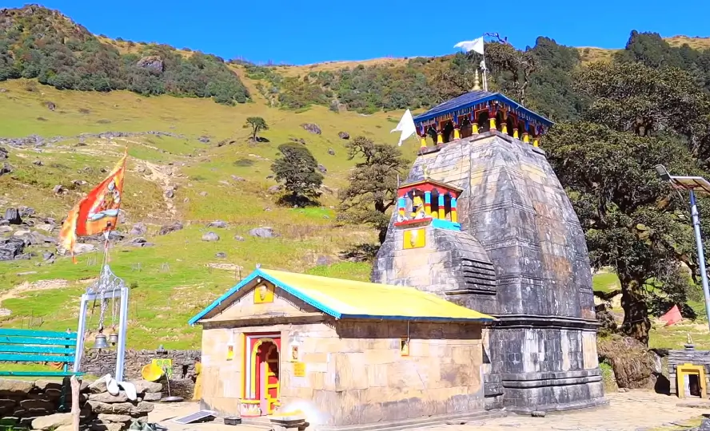
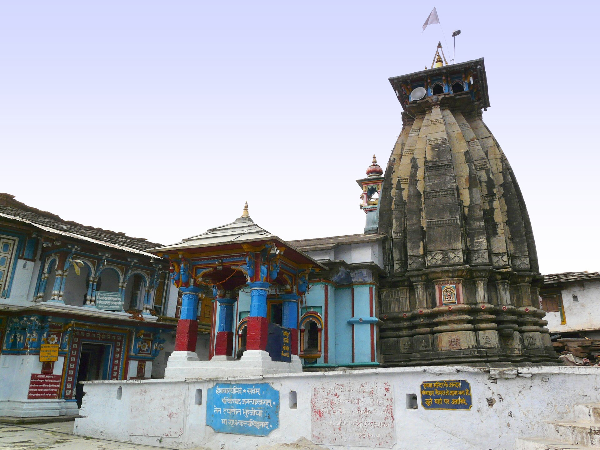
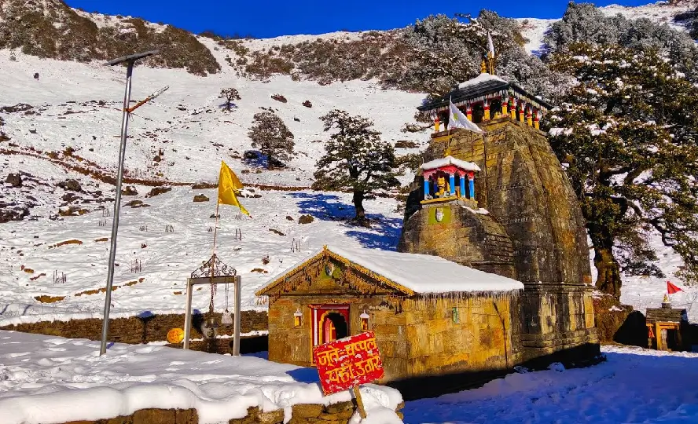
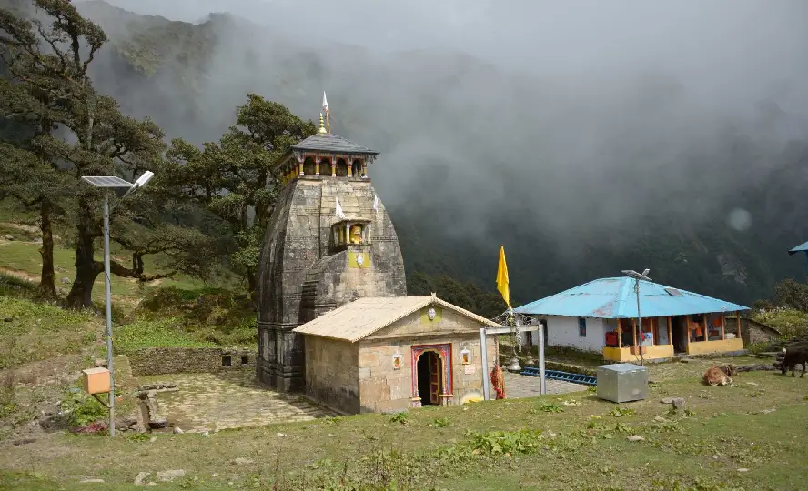
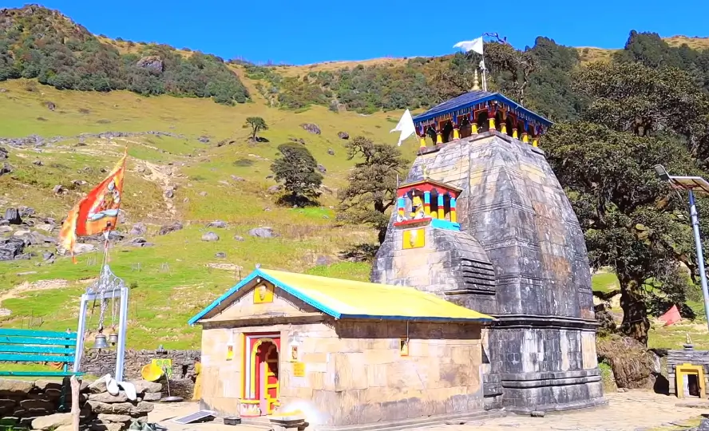

A Jewel of the Garhwal Himalayas
Perched at an altitude of 3,497 meters (11,473 feet) in the Rudraprayag district of Uttarakhand, the Madhyamaheshwar Temple is a remarkable pilgrimage site and one of the five sacred Panch Kedar temples dedicated to Lord Shiva. Surrounded by the lush meadows and snow-capped peaks of the Garhwal Himalayas, this ancient stone shrine radiates spiritual energy and natural beauty, making it a must-visit for devotees and trekkers alike.
Mythology and Significance
According to legend, after the epic Mahabharata war, the Pandavas sought forgiveness from Lord Shiva for their actions in battle. Shiva, unwilling to forgive easily, disguised himself as a bull and vanished into the earth. His navel and stomach are believed to have reappeared at Madhyamaheshwar, where the temple was later established by the Pandavas themselves. The temple enshrines a black stone Shiva lingam, uniquely shaped like a bull’s navel, symbolizing the “core” or “center” of Shiva’s divine form.
Architectural Beauty
The temple showcases classic Himalayan stone architecture, blending seamlessly with its pristine surroundings. Its modest yet elegant Nagara-style structure features stone walls and wooden carvings. Inside, the sanctum houses the revered Shiva lingam, while two smaller shrines are dedicated to Goddess Parvati and Ardhanarishwara, representing the union of Shiva and Shakti. Nearby, the ancient shrine of Vriddh (Budha) Madhyamaheshwar stands atop a ridge, offering panoramic views of the Chaukhamba range.
| Feature | Description |
|---|---|
| Location | Mansoona village, Rudraprayag, Uttarakhand, India |
| Elevation | 3,497 meters (11,473 feet) above sea level |
| Main Deity | Lord Shiva (Navel form) |
| Other Shrines | Parvati, Ardhanarishwara, Vriddh Madhyamaheshwar |
| Best Time to Visit | May to November |
| Famous For | Panch Kedar, Trekking, Meadows, Spiritual Solace |
The Trekking Experience
Reaching Madhyamaheshwar is an adventure in itself. The trek begins from Ransi village and covers approximately 24–32 km, winding through dense forests, alpine meadows, and glistening streams. The journey, though challenging, rewards pilgrims with breathtaking Himalayan vistas and an overwhelming sense of accomplishment upon arrival.
Spiritual and Cultural Importance
The temple is open for six months each year, from May to November, closing during the harsh winter when the idol is moved to Omkareshwar Temple in Ukhimath. Pilgrims believe that a visit to Madhyamaheshwar absolves them of sins and brings them closer to salvation. The evening aarti and rituals performed here, set against the backdrop of towering peaks and tranquil meadows, create a truly mystical atmosphere.
How to Reach
- By Air: Jolly Grant Airport, Dehradun (approx. 205–235 km to Ukhimath)
- By Rail: Haridwar Railway Station (approx. 202–225 km to Ukhimath)
- By Road: Buses and taxis available to Ukhimath, then to Ransi village; trek begins from Ransi
Madhyamaheshwar Temple is not just a destination—it is a journey of faith, endurance, and discovery, where the spirit of the Himalayas and the legend of Lord Shiva come alive in every stone and every prayer.